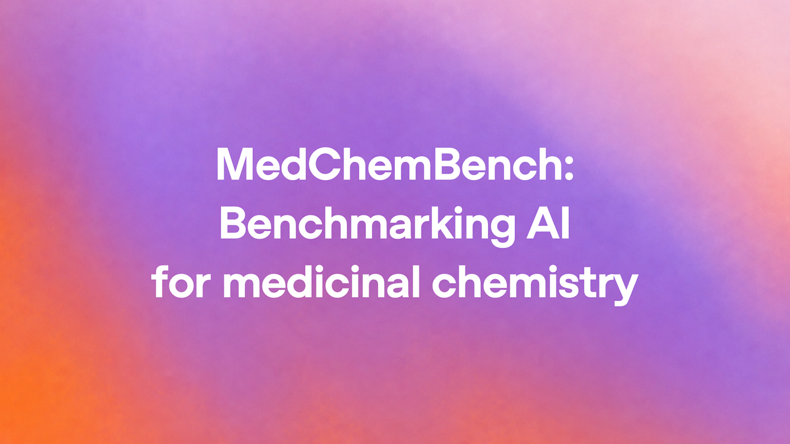
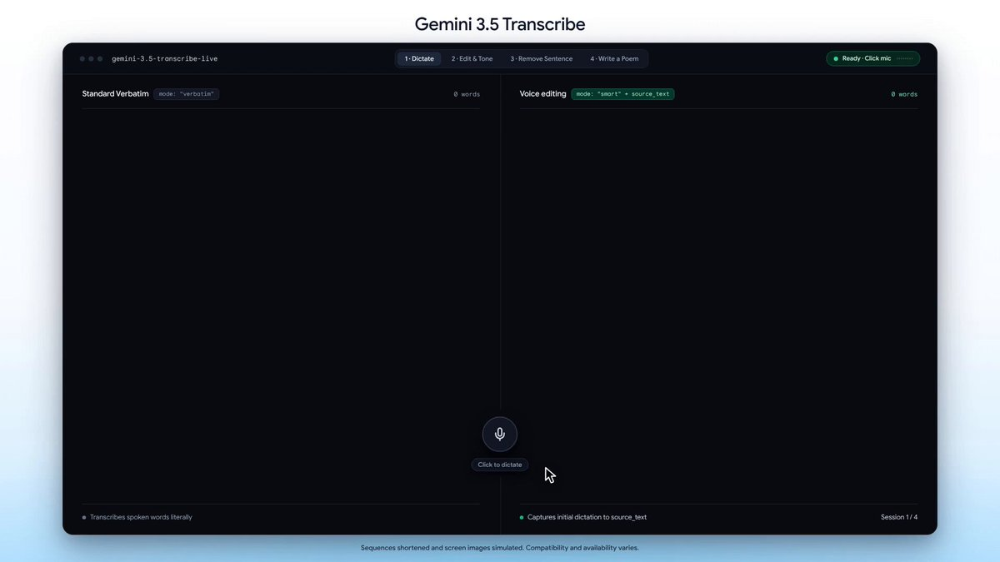
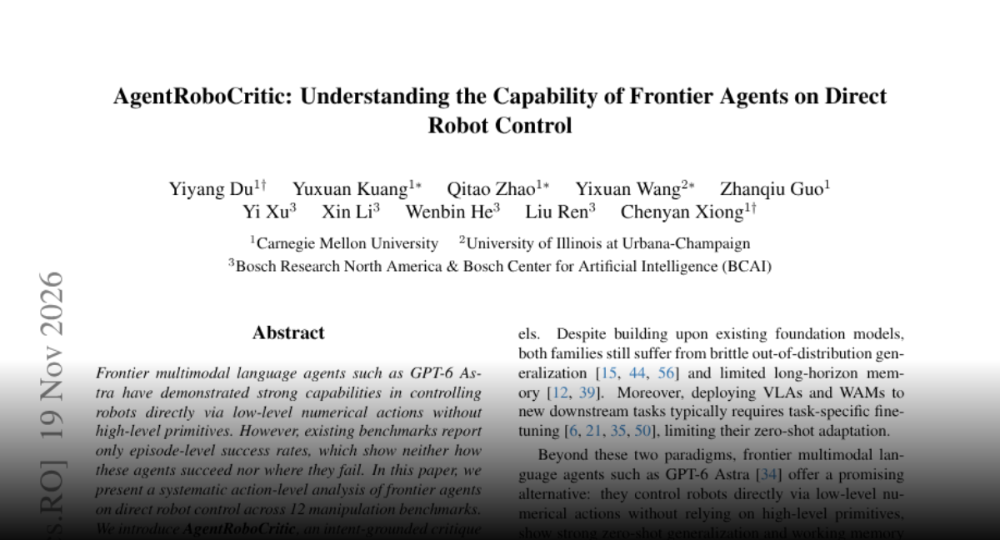
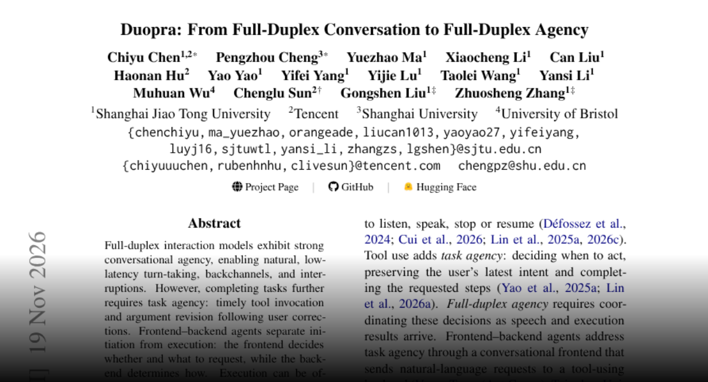
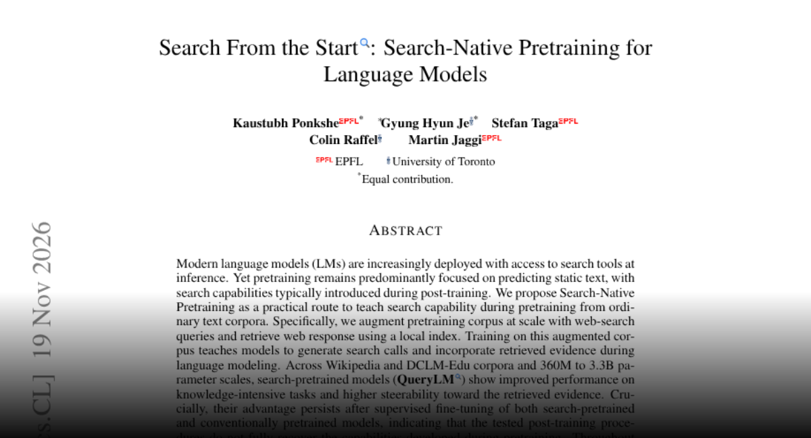
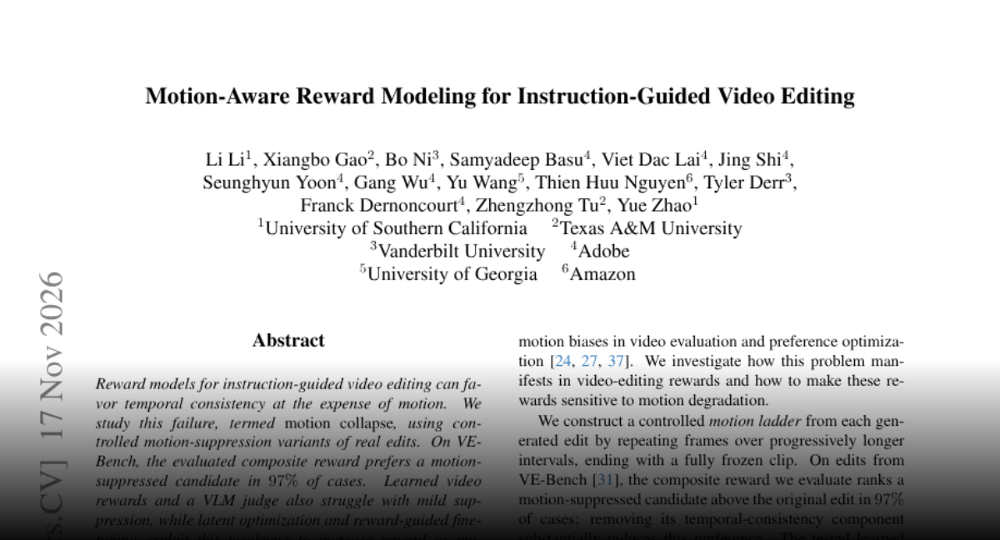

01
OpenAI 探讨以困惑度衡量模型进展
OpenAI 的《Perplexity and Intelligence》讨论用困惑度衡量模型进展，并据此建立新能力的共同评估方法。采集到的 X 帖子显示，该文引发 AI 从业者广泛讨论，既有对透明度的支持，也有对单一指标概括智能的质疑。其重点是共同测量框架；预测指标可以帮助比较，但不能独立证明模型在所有实际任务中的表现。
每天一次，过滤 AI 噪音
OpenAI 的《Perplexity and Intelligence》讨论用困惑度衡量模型进展，并据此建立新能力的共同评估方法。采集到的 X 帖子显示，该文引发 AI 从业者广泛讨论，既有对透明度的支持，也有对单一指标概括智能的质疑。其重点是共同测量框架；预测指标可以帮助比较，但不能独立证明模型在所有实际任务中的表现。

Eugene Yan 基于对十二项基准的拆解，讨论公开评估如何运作、在哪里失效，以及应如何改进。在 AI 共同进展指标重新成为讨论焦点时，这类方法审视尤为相关。对选型团队而言，重点是理解评估构造，并判断任务与失败模式是否对应实际部署，而不是只关注榜单分数。

OpenAI 介绍针对对抗性蒸馏的分层方法，结合模型训练、防护、检测和执行措施，限制能力提取。这将模型保护同时放在技术控制和运营响应层面，对通过 API 提供能力的组织具有参考价值。采集摘要没有量化效果或误报率，因此应将其理解为提供方的防御策略，而非已经消除提取风险的证明。

OpenAI 推出 MedChemBench，用于评估模型解释分子结构、根据实验依据推理，以及在早期药物发现中选择化合物的能力。它将评估推进到依赖专业证据的任务领域。当前描述明确了任务，但不能证明临床收益或药物研发成功；直接价值是提供衡量早期科研辅助能力的结构化方法。

CNBC 报道英伟达恢复黄仁勋首席执行官职务。这家关键 AI 算力供应商的领导层变化成为当天重要行业新闻，并引发 Hacker News 和 X 上研究者及企业高管讨论。当前可以确认的报道重点是任命逆转；社交平台的反应不足以证明其法律、政治或商业后果，后续影响仍需关注进一步报道。

Z.ai 的 GLM-5.4 官方公告将其描述为面向通用编码、采用该公司首个循环 Transformer 的模型。采集时，这条消息在 Hacker News 获得 661 分和 246 条评论，是本次结果中讨论度最高的 AI 发布。其架构方向值得开发者关注；当前采集到的公告信息不足以确定基准分数、价格或部署要求。
一篇分析将据报道长达 1700 万行的 Lean 证明，与 Mathlib 著名定理及 Reservoir 收录的软件包进行比较。文章指出，超大型代码库既可能包含数学证明，也可能大量包含自动生成的数据库检查，并讨论 AI 生成的费马大定理项目规模。机器可检查与人类可理解是不同问题；这项规模比较并非对所报道黎曼猜想结果的独立验证。
Runway 展示在 ChatGPT 内结合 GPT-6.2 Astra、Blender 与视频生成工具的流程。据公司介绍，Astra 根据历史图纸重建万神殿，Blender 负责镜头运动，Runway 将场景转换为古罗马节庆画面。案例体现建模与视频工具协作；建筑一致性是演示中的主张，并非与其他制作系统进行量化比较的结果。

可灵表示，Image 4.0 可以通过单个提示生成最多十张图像，并保持主体和视觉风格一致。这项功能回应了分镜、广告活动等需要连续视觉资产的制作需求，减少逐张独立提示的工作。采集到的帖子展示了功能，但没有提供受控的一致性评估，也未说明表现如何随场景复杂度变化。

Nathan Lambert 分享了一套关于后训练主要开放问题及领域发展路径的幻灯片，并将其描述为 Trillium Labs 的研究目标，同时邀请开展开放研究的人合作。该帖在采集结果中获得较高互动。它提供的是研究议程与协作方向，而非已完成模型或基准提升的发布。

Runway 表示，自十月初以来，App Studio 合并的几乎所有拉取请求都由智能体编写。其工程介绍强调审查变更、浏览器测试，以及高风险决策交由工程师处理。值得关注的是围绕代码生成建立的审核和测试流程。这是公司对单一产品工作方式的介绍，不能直接推广为所有团队都已实现自主开发。

Thomas Wolf 表示，随着 AI 下载需求挑战传统 CDN 模式，Hugging Face 自夏季起运营自有内容分发网络。帖子称月流量接近一艾字节，每秒约八万次请求。这些是公司公布的规模指标，并非独立审计结果。模型文件分发正成为训练和推理之外的重要基础设施问题。

Pika 宣布接入 Seedance 2.5 Flash，定位于广告创意变体、多次尝试和批量制作。帖子列出最长三十秒、480p 或 720p 的视频输出，以及最多十张图片、五段视频和五段音频参考输入。这些限制有助于创作者判断适用场景，但公告并未证明相对生成质量或成片成本。

Google 表示将 Gemini 3.5 Transcribe 的语音编辑能力引入 Gemini API，关联到 Gboard 上 Rambler 及 macOS Gemini 应用使用的技术。开发者可构建通过语音编辑、改写和翻译现有文本的体验。其价值在于超越基础听写的交互方式；采集到的公告没有明确延迟保证、语言覆盖或 API 定价。

Google 宣布 Gemini 4 Hydrogen 已上线 Gemini 应用和搜索，定位于速度与日常工作，并强调多种智能体工作流中的高效执行。广泛使用的消费入口使这次更新不仅与模型研究者相关。采集到的公告没有量化响应速度、说明地区限制，也未提供与同系列其他模型的独立比较。

Luma 展示 Ian Lihui Wang 的短片《One Last Change》，内容围绕不断升级的水瓶广告修改要求展开。公司称作品使用 Luma MCP 制作，该能力已进入 ChatGPT 和 Claude。案例体现对话助手可以连接专业创作工具，但不能据此证明完整制作可无人值守，或任意创意需求都能获得稳定质量。

StereoVLM 利用标定双目观察学习度量空间推理，训练从对应关系和视差逐步扩展到深度及语义推理，并提出 Stereo3D-Bench。作者报告 95.17% 的深度准确率，以及空间任务和 RoboCasa 操作上的提升。干预实验表明有效跨视角几何信息确实有贡献，对需要可靠距离信息的具身系统具有参考意义。

MemOnce 通过记忆编码器和解码器保存少量最终层状态，并按需重建注意力缓存；稀疏检索索引跨层只计算一次。作者报告，在百万词元上下文中改造 Qwen3.5-4B 后，记忆状态缓存缩小 1313 倍，预填充延迟降低 6.9 倍。这些结果对应论文实验设置，实际价值仍取决于任务质量和负载特征。

NoPeWorld 在冻结的扩散 Transformer 隐状态上训练小型预测头，检测可能穿透障碍物的动作，再用尽量保留原意的安全动作替换。作者报告，在六个视频世界模型上，平均物理违规率从 74% 降到 16%。配套 NoPeBench、代码和权重为改进物理一致性提供路径，但剩余违规也说明问题尚未解决。

AgentRoboCritic 在十二项操作基准上分析前沿智能体的直接机器人控制，要求策略为每个数值动作说明意图，再由评论模型检查结果与失败类型。研究发现恢复和语义落地能力，同时指出抓取、对齐等瓶颈，并发布 12844 个标注动作及开放评论模型。其价值在于超越整段任务成功率，提供逐动作诊断。

Duopra 将全双工对话扩展到任务执行，把及时工具调用和参数修订纳入交互训练。三阶段流程结合协议监督训练、强化学习和说话模块条件修复。作者报告，在相同后端下，流式评估的 Pass@1 从 4.7% 升到 44.7%。研究强调许多失败发生在工具执行之前，准确发起请求与后端完成任务同样重要。

Search-Native Pretraining 在普通语料中加入搜索查询和检索结果，让模型在后训练之前学习搜索及证据使用。作者在 3.6 亿至 33 亿参数实验中报告知识任务表现及对检索材料的响应改善；14 亿参数 QueryLM 在所测知识任务上匹敌或超过计算量匹配的 33 亿基线。公开检查点和数据支持进一步研究工具使用应在哪一训练阶段学习。

一项视频编辑研究发现，奖励模型可能在奖励时间一致性时偏好运动受抑制的结果。在 VE-Bench 受控比较中，某组合奖励有 97% 的情况偏好这类候选。新方法加入帧差输入，并针对运动抑制或伪造样本训练，在报告测试中将这一偏好降至零。研究揭示，优化便利的质量信号可能损害用户希望保留的运动。